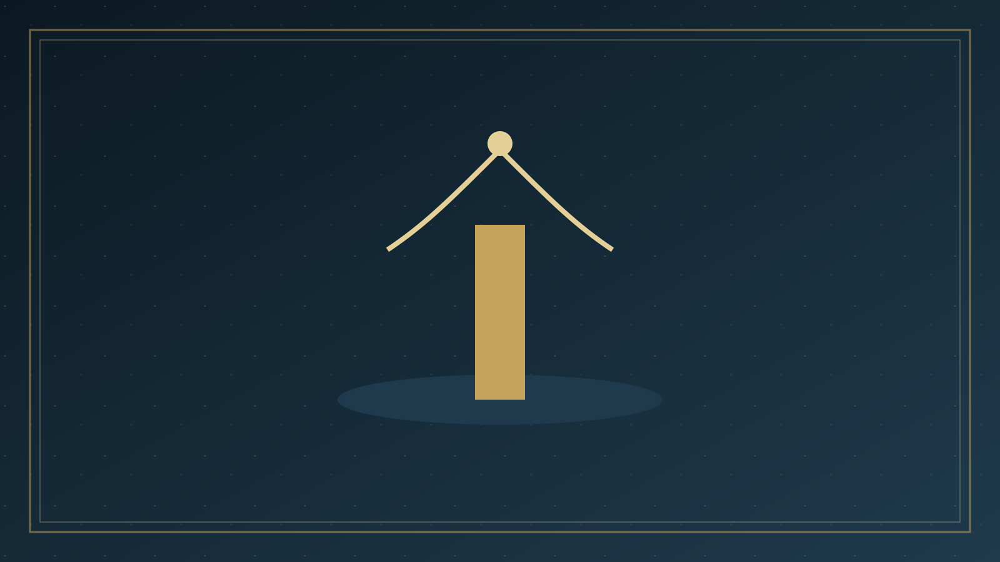

分題 05 / 06
接受之後
現在您已經接受了基督…
怎樣知道基督已在你的生命中
你有沒有請基督進入你的生命？根據啟示錄3:20神的應許，現在基督是否在你的心裡？基督應許進入你的生命，祂會失信嗎？
你有什麼根據知道神答應了你的禱告？（根據神的信實和祂可靠的話—聖經）
約翰一書 5:11~13
「這見證就是神賜給我們永生，這永生也是在祂兒子裡面。人有了神的兒子就有生命，沒有神的兒子就沒有生命。我將這些話寫給你們信奉神兒子知名的人，要叫你們知道自己有永生。」
要常常感謝神，因為基督已進入你的生命，並且永不離開你（希伯來書 13:5）。當你照著神的應許，請祂進入你心時，就能知道復活的基督已在你的生命中，並且已將永生賜給你，因為祂絕不會欺騙你。
關於感覺怎樣呢？
不要依靠感覺 - 我們信仰的根據，是聖經可靠的應許，不是我們容易改變的感覺。基督徒的信心生活是根據神的信實和聖經的可靠。下面火車的圖表說明事實（神和祂的話）、信心（我們信靠神和祂的話）、和感覺（我們信靠和順服的結果）三者之間的關係。
現在你已經接受了基督
當你憑信心接受基督的時候，你的生命已經發生了許多改變，至少包括下面幾點：
基督已經進入你的生命
啟示錄3:20; 歌羅西書 1:27
你的罪已經得到赦免
歌羅西書 2:13; 1:14
你已經成為神的兒女
約翰福音 1:12
你已經有了永遠的生命
約翰福音 5:24
你已經開始了神為你計畫的新生命
約翰福音10:10；哥林多後書5:17；帖撒羅尼迦前書 5:18
接受基督實在是你人生中最奇妙的事。你願意現在禱告，感謝神為你所做的事嗎？感謝的禱告就是信心的表示。